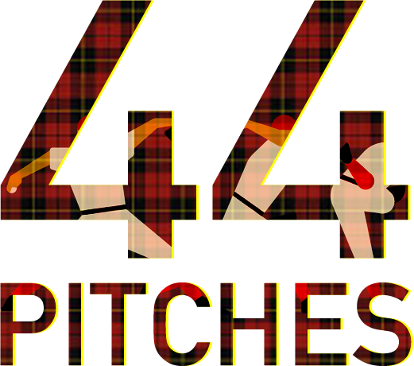

Over the last year or two, I have started to realise this boom of startup culture that is taking place in Australia. In particular, Studio39 and Startup Catalyst program were some of the first things that peaked my interest in the world of startup. But I needed to get my hands dirty. So, a month ago I decided to take action and decided to go to my first startup weekend.
Keep in mind, my knowledge about startup weekends was close to none. But with passion and hard work as my allies, forward I went.
This particular event was run by QUT Creative Enterprise Australia with the focus on Creative tech. It was a crazy 54-hour arrangement which saw hackers, hipsters and hustlers all coming together to create something they can validate and create a startup out of. Here are some good ol' stats for your amusement:
It may be hard to believe, but munching down on all the delicious food was not my main goal. I had an agenda of my own. After all, what is the point of attending such a great event and not taking advantage of the opportunities that present themselves one after the other. With that in mind, I kept my focus on 5 main things.
Did I achieve what I set out to do? Well, you have to read a little bit more to find out ;)
( If you really want to )
Ah the beginning of the madness. As soon as I got there, I could sense the energy that was flowing through the whole venue and the drinks and food did nothing but increase my enthusiasm for what was going to be my first startup experience.
There was a total of 44 Pitches. A staggering number by all accounts. No one was expecting that. It felt like every other person was up on the stage ready to share their ideas. Although inspiring, it also meant that most of them will need to put their ideas aside and work on one of the few selected pitches.
Ultimately, 14 teams were formed, of which we (me and few other peers from studio39 ) choose to be a part of Lunchbox Meals . A foodie startup idea to promote healthy eating by establishing central hubs in Brisbane to hand deliver healthy meals. Though it was not our idea, it was the one that attracted us the most because it provided something we all wanted in our life.
With the team of 9 talented hunks and few drinks in our hand, we were all set out to conquer the world the coming day.
Side note : Always check for stormy weather before you decide to walk for 30 minutes, we got wet. Really wet.
We started the day with delicious coffee which was graciously provided by Coffee Beans Deliver. Being short on time, we decided to get going and start building the idea more. With 5 hackers on the team we quickly started grinding gears and worked on the landing page, social media campaign and other graphics for the business model.
On the other end, the hustlers were truly hustling to get the business model on the paper and ready for valuation. Afterwards, we hit the nearby markets to consult with our potential customers and really understand what they wanted.
With time clicking past faster than normal, we quickly came to the decision that the LunchBox Meal’s business model and revenue stream was not a feasible task. The total cost of one meal was more than what our customers expected. Along with that, the mentors who came to our aid also implied hesitance in the execution of the idea.
Long story short, it was time to pivot.
It was around 6pm when we had the final discussion with the team, and when we decided our next move. That was to put our energy into the idea my peer, Joshua Holmes originally pitched. In essence, the concept was to create a simple web service that will help creative individuals aggregate all their portfolio services such as Dribbble, Behance, Github, Bitbucket, etc., into one. We called it Composit. However, it was clear that idea is far from being ready and requires tremendous amount of work. We had 20 hours to do that.
The most important part was that we did not give up. We prevailed.
As Sunday rolled around we get to the venue, only to find out 3 of our team members have decided to depart the team and go solo for the rest of the day. In a way it was beneficial to us because we now had a better control over the small team.
For rest of the day we hustled through to create the landing page, social media campaign, prototype and anything we could use to showcase our product. But the key thing we were missing was a strong business model with optimal revenue stream. This is when the mentors came as Angels in disguise and gave us few pointers about how we can turn our idea into a platform for HR companies to weed out and approach talent.
It wasn't long untill we realised pitch submission was only an hour away. Ergo, we changed our gears and started preparing the graphics and script for the slides. Meanwhile my friend Joshua was getting ready for the pitch, as it was originally his idea. In the matter of moments we were called on the stage to pitch our startup to the panel of industry proclaimed judges which included Steve Baxter, Elaine Stead, Michael Smellie, Drew Koven and Professor Carol Dickenson.
And I have to say that Joshua did a fantastic job, he spoke with confidence and had passion in his eyes throughout the pitch. As a team we presented ourselves in a calm manner and answered their hard hitting questions one by one.
The general consensus between the judges was that our overall product was not the best thing ever, but we completely nailed the problem statement. Some questions were also raised against out proposed ‘algorithm’ but I think they understood the constraints we were in while developing it.
The main eye-opening statement came straight from Steve Baxter when he bluntly said to
I agree completely. Something I will undoubtedly keep in mind for my next startup venture.
Finally, came the moment of truth. Did we pull a quick one and win over the judges? Sadly, no we did not win any of the prizes. But that was never the main objective. The point for me was to not pressure myself in the conditions of completion and actually take full advantage of the event to accomplish my numerous objectives.
That brings us to the final part of this blog…
As the heading says, I won. Did I win any prizes? no. Yet I did What I set out to do.
I learned, I increased my engagement skills, I grew my network, I made some new friends, and I am now fully embracing my ride on the startup train. Also, I had fun, a lot it ;)
I want to share exactly what I learned, and in essence that is the whole point of this blog ( may be I should have done that earlier). If you ever plan to attend an event similar to this, I would recommend reading through the list below to get yourself ready.
In closing thoughts, I would like to show my gratitude to the QUT CEA team that organised this incredible event and I would like to thank all the mentors and the judges who awarded us with some great insight about the world of startups. I simply cannot wait to participant again and leverage my learnings from this experience.
THANK YOU.